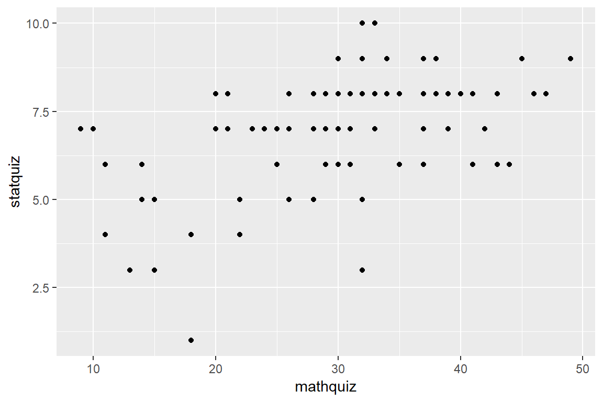
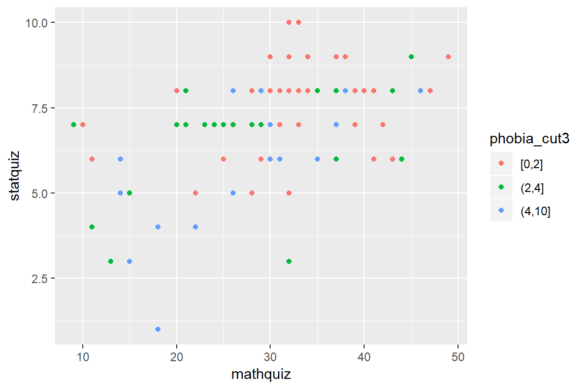

7 Bivariate Distributions - Scatterplots
7.1 Two continuous variables
data_ihno %>%
ggplot() +
aes(x = mathquiz,
y = statquiz) +
geom_point()
data_ihno %>%
dplyr::mutate(phobia_cut3 = cut(phobia,
breaks = c(0, 2, 4, 10),
include.lowest = TRUE)) %>%
ggplot() +
aes(x = mathquiz,
y = statquiz,
color = phobia_cut3) +
geom_point()
data_ihno %>%
dplyr::mutate(phobia_cut3 = cut(phobia,
breaks = c(0, 2, 4, 10),
include.lowest = TRUE)) %>%
ggplot() +
aes(x = mathquiz,
y = statquiz) +
geom_count() +
facet_grid(. ~ phobia_cut3)